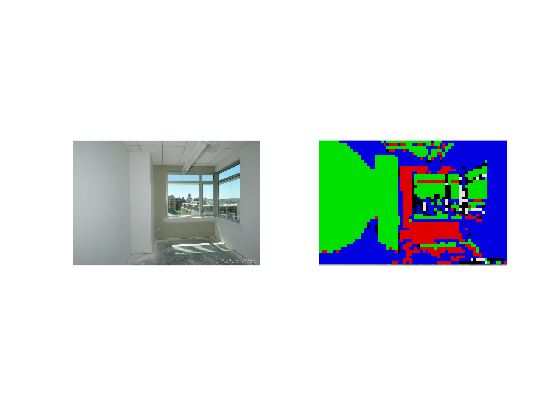

Class Prediction
Prediction of the patches of the test image
Contents
Introduction
Color of the different classes
- Concrete - Red
- Brick - Black
- Asphalt - White
- Soil - Green
- Timber - Blue
Prediction
dbstop in disp
patchFeaturesTest = struct('Feature',{}, 'Class',{}); [filename, pathname] = uigetfile('*.*'); currentImage = imread([pathname filename]); % transforming the gray scale to RGB storage format, if any if size(currentImage,3) == 1 currentImage(:,:,2) = currentImage(:,:,1); currentImage(:,:,3) = currentImage(:,:,1); end testImage = currentImage; for j = 1:patchSize(1):(size(currentImage,1)-(patchSize(1)-1)) for k = 1:patchSize(1):(size(currentImage,2)-(patchSize(1)-1)) patch = currentImage(j:j+(patchSize(1)-1),k:k+(patchSize(1)-1),:); fm_test = f(patch); fm_test = reshape(fm_test{1,1}, [1 64])* p; label = predict(pred, fm_test); % Test image for presentation with color changed depending on patch % class if isequal(label{1,1},'Concrete') testImage(j:j+(patchSize(1)-1),k:k+(patchSize(1)-1),1) = 225; testImage(j:j+(patchSize(1)-1),k:k+(patchSize(1)-1),2) = 0; testImage(j:j+(patchSize(1)-1),k:k+(patchSize(1)-1),3) = 0; else if isequal(label{1,1},'Brick') testImage(j:j+(patchSize(1)-1),k:k+(patchSize(1)-1),1) = 0; testImage(j:j+(patchSize(1)-1),k:k+(patchSize(1)-1),2) = 0; testImage(j:j+(patchSize(1)-1),k:k+(patchSize(1)-1),3) = 0; else if isequal(label{1,1},'Asphalt') testImage(j:j+(patchSize(1)-1),k:k+(patchSize(1)-1),1) = 225; testImage(j:j+(patchSize(1)-1),k:k+(patchSize(1)-1),2) = 225; testImage(j:j+(patchSize(1)-1),k:k+(patchSize(1)-1),3) = 225; else if isequal(label{1,1},'Soil') testImage(j:j+(patchSize(1)-1),k:k+(patchSize(1)-1),1) = 0; testImage(j:j+(patchSize(1)-1),k:k+(patchSize(1)-1),2) = 225; testImage(j:j+(patchSize(1)-1),k:k+(patchSize(1)-1),3) = 0; else testImage(j:j+(patchSize(1)-1),k:k+(patchSize(1)-1),1) = 0; testImage(j:j+(patchSize(1)-1),k:k+(patchSize(1)-1),2) = 0; testImage(j:j+(patchSize(1)-1),k:k+(patchSize(1)-1),3) = 225; end end end end end end
Visualization of original image and predicted results
figure('Name','Test Image and Prediction') bx = subplot(1, 2, 1); imshow(currentImage, 'Parent', bx); bx = subplot(1, 2, 2); imshow(testImage, 'Parent', bx);